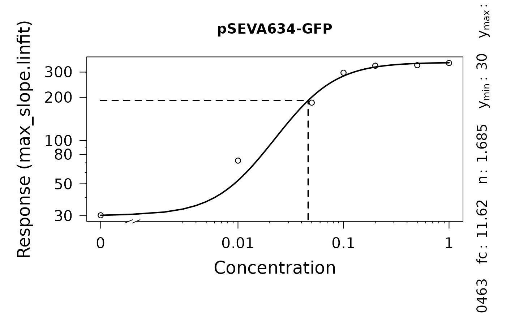
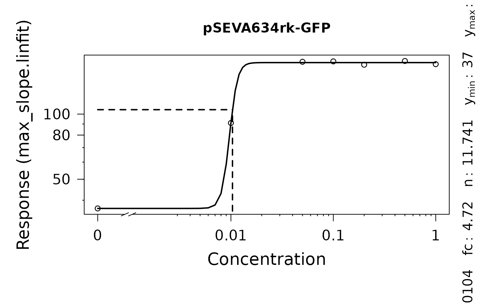

Fit a biosensor model (Meyer et al., 2019) to response vs. concentration data
Source:R/dose-response-analysis.R
fl.drFit.RdFit a biosensor model (Meyer et al., 2019) to response vs. concentration data
Usage
fl.drFit(
flTable,
control = fl.control(dr.method = "model", dr.parameter = "max_slope.spline")
)Arguments
- flTable
A dataframe containing the data for the dose-response model estimation. Such table of class
flTablecan be obtained by runningflFitwithdr.method = 'model'as argument in thefl.controlobject.- control
A
fl.controlobject created withfl.control, defining relevant fitting options.- dr.method
(Character) Perform either a smooth spline fit on response parameter vs. concentration data (
'spline') or fit a biosensor response model with'model'(proposed by Meyer et al., 2019).- dr.parameter
(Character or numeric) The response parameter in the output table to be used for creating a dose response curve. See
fl.drFitfor further details. Default:'max_slope.spline', which represents the maximum slope of the spline fit Typical options include:'max_slope.linfit','dY.linfit','max_slope.spline', and'dY.spline'.
Value
An object of class drFit.
- raw.data
Data that passed to the function as
flTable.- drTable
Dataframe containing condition identifiers, fit options, and results of the dose-response analysis.
- drFittedModels
List of all
drFitModelobjects generated by the call offl.drFitModelfor each distinct experiment.- control
Object of class
fl.controlcreated with the call offl.control.
References
Meyer, A.J., Segall-Shapiro, T.H., Glassey, E. et al. Escherichia coli “Marionette” strains with 12 highly optimized small-molecule sensors. Nat Chem Biol 15, 196–204 (2019). DOI: 10.1038/s41589-018-0168-3
Examples
# \donttest{
# Load example dataset
input <- read_data(data.fl = system.file('lac_promoters.xlsx', package = 'QurvE'),
sheet.fl = 2 )
#> Sample data are stored in columns. If they are stored in row format, please run read_data() with data.format = 'row'.
# Run fluorescence curve analysis workflow
fitres <- flFit(fl_data = input$fluorescence,
time = input$time,
parallelize = FALSE,
control = fl.control(x_type = 'time', norm_fl = FALSE,
suppress.messages = TRUE))
# Perform dose-response analysis
drFit <- fl.drFit(flTable = fitres$flTable,
control = fl.control(dr.method = 'model',
dr.parameter = 'max_slope.linfit'))
#>
#> === Dose-Response Estimation via Model Fit ==============================
#> ---------------------------------------------------
#> --> Checking data ...
#> --> Number of distinct tests found: 3
#> --> Valid datasets per test:
#> TestID Number
#> pSEVA634rκ∙GFP 7
#> pSEVA634r∙GFP 7
#> pSEVA634∙GFP 7
#>
#>
#> === Dose response curve estimation ================
#> --- EC 50 -----------------------------------------
#> --> pSEVA634rκ∙GFP
#> sensitivity: 0.0103 | yEC50: 105 | fold change: 4.72 | leakiness: 36.7
#>
#>
#>
#>
#> === Dose response curve estimation ================
#> --- EC 50 -----------------------------------------
#> --> pSEVA634r∙GFP
#> sensitivity: 0.0531 | yEC50: 75 | fold change: Inf | leakiness: 0
#>
#>
#>
#>
#> === Dose response curve estimation ================
#> --- EC 50 -----------------------------------------
#> --> pSEVA634∙GFP
#> sensitivity: 0.0463 | yEC50: 190 | fold change: 11.62 | leakiness: 30.2
#>
#>
# Inspect results
summary(drFit)
#> Test log.x log.y yEC50 y.min y.max fc K
#> 1 pSEVA634rκ∙GFP FALSE FALSE 104.83198 36.65873 173.0052 4.719346 0.01034841
#> 2 pSEVA634r∙GFP FALSE FALSE 75.10917 0.00000 150.2183 Inf 0.05312423
#> 3 pSEVA634∙GFP FALSE FALSE 190.27550 30.16190 350.3891 11.616942 0.04626946
#> n yEC50.orig K.orig test
#> 1 12.014748 104.83198 0.01034841 max_slope.linfit
#> 2 3.383541 75.10917 0.05312423 max_slope.linfit
#> 3 1.684617 190.27550 0.04626946 max_slope.linfit
plot(drFit)


# }